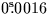
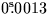
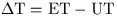
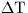

It is not hard to see why such timescales are necessary. UTC would clearly be unsuitable as the argument of an ephemeris because of leap seconds. A solar-system ephemeris based on UT1 or sidereal time would somehow have to include the unpredictable variations of the Earth's rotation. TAI would work, but eventually the ephemeris and the ensemble of atomic clocks would drift apart. In effect, the ephemeris is a clock, with the bodies of the solar system the hands.
Only two of the dynamical timescales are of any great importance to observational astronomers, TT and TDB. (The obsolete timescale ET, ephemeris time, was more or less the same as TT.)
Terrestrial Time TT is
the theoretical timescale of apparent geocentric ephemerides of solar
system bodies. It applies, in principle,
to an Earthbound clock, at sea-level, and for practical purposes
it is tied to
Atomic Time TAI through the formula TT = TAI +  .In practice, therefore, the units of TT are ordinary SI seconds, and
the offset of
.In practice, therefore, the units of TT are ordinary SI seconds, and
the offset of  with respect to TAI is fixed.
The SLALIB routine
sla_DTT
returns TT-UTC for a given UTC
(n.b. sla_DTT
calls
sla_DAT,
and the latter must be an up-to-date version if recent leap seconds are
to be taken into account).
with respect to TAI is fixed.
The SLALIB routine
sla_DTT
returns TT-UTC for a given UTC
(n.b. sla_DTT
calls
sla_DAT,
and the latter must be an up-to-date version if recent leap seconds are
to be taken into account).
Barycentric Dynamical Time TDB differs from TT by an amount which cycles back and forth by a millisecond or two due to relativistic effects. The variation is negligible for most purposes, but unless taken into account would swamp long-term analysis of pulse arrival times from the millisecond pulsars. It is a consequence of the TT clock being on the Earth rather than in empty space: the ellipticity of the Earth's orbit means that the TT clock's speed and gravitational potential vary slightly during the course of the year, and as a consequence its rate as seen from an outside observer varies due to transverse Doppler effect and gravitational redshift. By definition, TDB and TT differ only by periodic terms, and the main effect is a sinusoidal variation of amplitude ; the largest planetary terms are nearly two orders of magnitude smaller. The SLALIB routine sla_RCC provides a model of TDB-TT accurate to a few nanoseconds. There are other dynamical timescales, not supported by SLALIB routines, which include allowance also for the secular terms. These timescales gain on TT and TDB by about /day.
For most purposes the more accessible TT is the timescale to use, for example when calling sla_PRENUT to generate a precession/nutation matrix or when calling sla_EVP to predict the Earth's position and velocity. For some purposes TDB is the correct timescale, for example when interrogating the JPL planetary ephemeris (see Starlink User Note 87), though in most cases TT will be near enough and will involve less computation.
Investigations of topocentric solar-system phenomena such as occultations and eclipses require solar time as well as dynamical time. TT/TDB/ET is all that is required in order to compute the geocentric circumstances, but if horizon coordinates or geocentric parallax are to be tackled UT is also needed. A rough estimate of  is available via the routine sla_DT. For a given epoch (e.g. 1650) this returns an approximation to  in seconds.
SLALIB --- Positional Astronomy Library